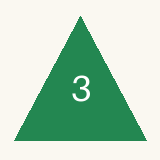

MLA｜iPhone Safari実機確認
対象は cbce1e1。合成データ専用です。普段使うMLAには入れません。Safariの通常タブで、このページのリンクを同じタブで開いて進めてください。サインイン画面が出たら、この会話と同じChatGPTアカウントで入ります。
URLと配信版① 旧版を開く — c2c719d
https://mla-safari-cbce1e1.wigglyfrost4096.chatgpt.site/old/index.html
② 試作版を開く — cbce1e1
https://mla-safari-cbce1e1.wigglyfrost4096.chatgpt.site/new/index.html
③ 別環境の試作版を開く — cbce1e1
https://mla-safari-restore-cbce1e1.wigglyfrost4096.chatgpt.site/new/index.html
①②は同じオリジン、③は別のホストです。アプリ本体は各コミットのファイルを無変更で配信します。配信ファイル・完全なコミットID
使うファイルと写真
旧形式JSONをダウンロード（mla-safari-legacy.json）。開いたページの「旧JSONをダウンロード」を押し、確認が出たら「ダウンロード」を選びます。旧形式は写真本体を埋め込んだversion 3です。
| 記録 | 合成写真 |
|---|
| Listening：Safari Listening 1 | |
| Collection：Safari Collection 2 | |
| Live：Safari Live 3 |  |
操作順と期待する表示
- 旧版へ取り込む。上の旧JSONをFilesに保存し、①旧版を開いて「Language / 言語」を「日本語」にします。「JSONを読み込む」で旧JSONを選び、置き換えを確認します。
期待：「復元が完了しました。」。リスニング・購入・ライブが各1件で、上の3枚が表示されます。各記録の詳細でも写真を確認します。
- 新版へ移行する。旧版の別タブを残さず、同じタブで②試作版を開きます。
期待：3件と3枚がそのまま表示され、「保存できませんでした」等が出ません。
- Listeningの1件を編集する。「Safari Listening 1」を開き「編集」→「メモ（任意）」を下の文字に置き換え→「変更を保存」。その後Safariでページを再読み込みします。
Safari編集1
期待：編集したメモが残り、3件・3枚が表示されます。他の項目や写真は変えません。
- 写真付きJSONを保存・読み戻す。下へスクロールし「写真移行・復旧 / Photo migration and recovery」で「新版JSONを保存 / Export new JSON」と「旧v03 JSONを保存 / Export old v03 JSON」を押し、両方をFilesに保存します。「保存した新旧JSONを読み戻し確認 / Verify saved JSON files」でその2ファイルを選びます。1つずつ選んでも構いません。
期待：「読み戻し一致 / Verified: 新版, 旧v03」（1つずつなら各表示）。旧v1のボタンは使いません。
- 旧キーを整理する。「確認済みの旧データを整理 / Clean up verified legacy data」を押し、確認に回答します。
期待：「旧データの整理が完了しました。JSON原本を保管してください / Legacy cleanup complete; keep JSON files」。ここで旧版URLへ戻りません。
- 再読み込み後に保存する。Safariで再読み込みし、3件と3枚を確認。同じListeningのメモを下の最終文字に置き換えて「変更を保存」。もう一度再読み込みし、メモが残ることを確認します。
Safari編集1・再読み込み後保存
「JSONを書き出す」で保存し、Filesで migration-final.json と名前を付けます。
- 別環境で復元する。③別環境の試作版を開き、言語を「日本語」にします。「JSONを読み込む」で migration-final.json を選び、置き換えを確認。再読み込みして3件・3枚と最終メモを確認し、「JSONを書き出す」で restore-final.json として保存します。
- この会話へ提出する。migration-final.json と restore-final.json の2ファイルを添付してください。機種、iOSバージョン、全手順を通過したか（止まった場合は番号と表示）も一言添えます。
照合：Codexが全記録・全フィールドと3枚の画像データを期待値と自動比較します。JSONだけでは旧キー削除や表示成功そのものは証明できないので、手順5の完了表示も確認してください。
途中でエラー、写真欠落、別タブ更新の案内が出たら止まり、FilesのJSONと画面の状態を残してください。サイトデータ消去や普段のMLAへの読み込みは不要です。初回は両方の検証ホストを空の状態で使います。再試行時に既存データが残っている場合は、この会話へ状況を知らせてください。
この手順ページへ戻る